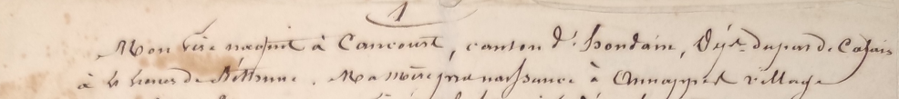
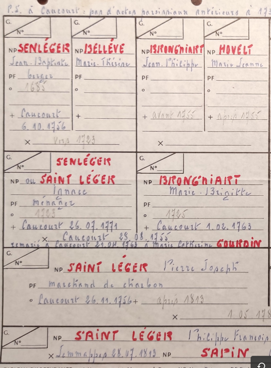

D'où vient le nom "Saint-Léger" ?
Rédigé par Arnaud Saint-Léger en 2025.
Bonjour à tous,
Avant de vous parler de Philippe, laissez-moi vous parler de ses parents et de l’origine de notre nom.

En 1855, Philippe écrivait à son fils, Victor : "Mon père naquit à Caucourt, canton d’Houdain, ..."
Philippe naît en 1787, à la veille de la Révolution française. La France est alors secouée par des récoltes maigres, des prix de pain qui flambent et des impôts qui écrasent les paysans. Dans le petit village de Caucourt, près d’Arras, ses parents et ses aïeux vivent modestement depuis plusieurs générations. Son père, marchand de charbon, est le fils d’un paysan honnête et travailleur. La famille ne dispose que de faibles ressources, et chaque saison est un combat : semailles, moissons, entretien du bétail, tout rythme la vie du village. Les maisons, simples et basses, abritent souvent plusieurs générations sous le même toit, et les repas se composent essentiellement de pain, de soupe de légumes et de quelques produits locaux. Les fêtes religieuses et les cérémonies paroissiales marquent les rares moments de réjouissance.
Dans ces campagnes, on parle le picard au quotidien, et le français n’existe alors que dans les actes officiels, rédigés par le curé ou le notaire. C’est pour cette raison que le nom de famille change au fil des générations : Philippe s’appelait Saint-Léger, son grand-père S’enleger, et son arrière-grand-père Senleger. L’orthographe reste approximative, reflétant l’oreille de celui qui écrivait plutôt qu’une règle précise.

Mais d’où vient ce nom, Saint-Léger ? On en retrouve dans de nombreuses régions de France – Normandie, Île-de-France, Picardie, Bourgogne, Champagne. Ces familles n’ont pas nécessairement de lien entre elles : elles tiennent simplement leur nom du village où elles vivaient. La famille Saint-Léger, c’était donc « ceux du village Saint-Léger ».
Or, qui était ce Léger ? Léger, ou Leodegar, était l’évêque d’Autun, né vers 616. Il fut capturé, atrocement mutilé pour des raisons politiques, et finalement assassiné en 678. Malgré ses souffrances, il resta ferme dans sa foi et fut vénéré comme martyr avant d’être canonisé par l’Église. Son culte se répandit rapidement, et plus de soixante-dix villages et paroisses en France adoptèrent son nom.
Nos ancêtres de cette lignée ont donc sans doute habité l’un de ces lieux portant la mémoire de ce saint.
J’ai rédigé ce texte sur la base des informations que j’ai retrouvées dans les « papiers de famille de Bonne Maman ». Le contexte historique est essentiel pour comprendre notre histoire. Je l’ai complété avec internet.